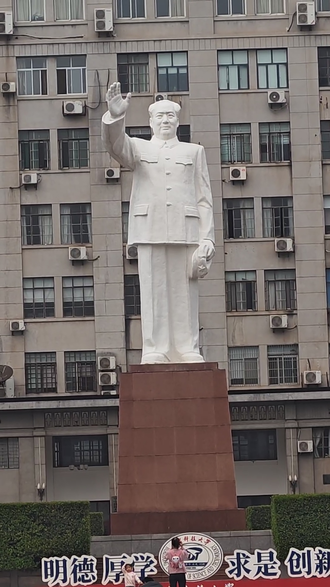

毛泽东像
这座雕像建于文化大革命期间，由当时的华中工学院师生共同参与设计和建造。见证了学校从华中工学院到华中理工大学再到华中科技大学的整个发展历程。历经多次维护修缮，最近一次全面修缮是在2017年（建像50周年）。是武汉地区保存最完好、规模最大的校园毛泽东塑像之一。
它不仅是对毛泽东同志的纪念，更是学校红色基因和革命传统的物质载体。已成为华中科技大学最具辨识度的标志性景观之一，是爱国主义教育、革命传统教育和校史教育的生动课堂，承载着几代华中大人的共同记忆，是校友返校必访之地。
这座历经半个多世纪的塑像，静静矗立在华中科技大学校园中心，见证着学校从单科性工学院到综合性研究型大学的辉煌发展历程，也将继续见证华中大建设中国特色世界一流大学的奋进之路。